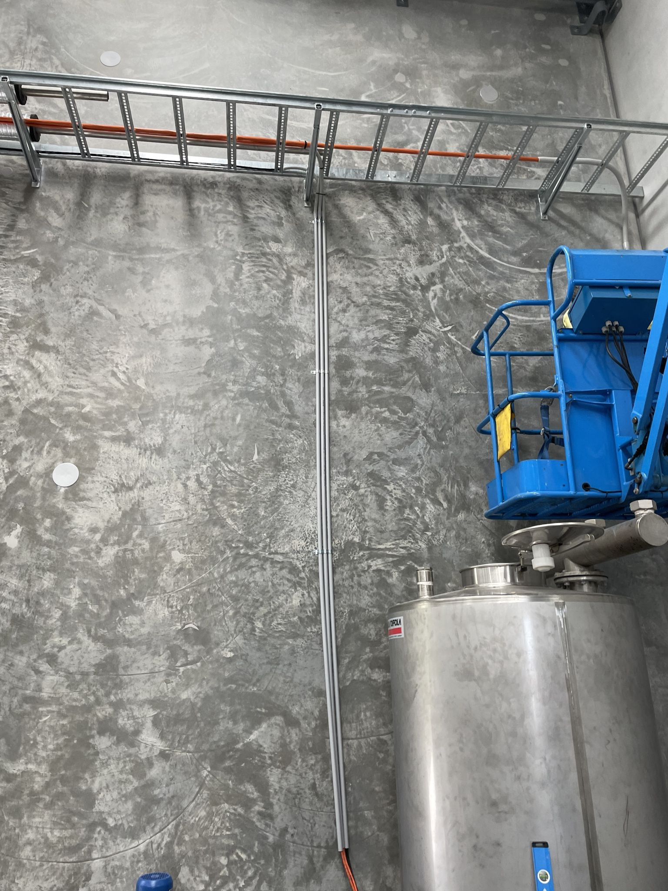
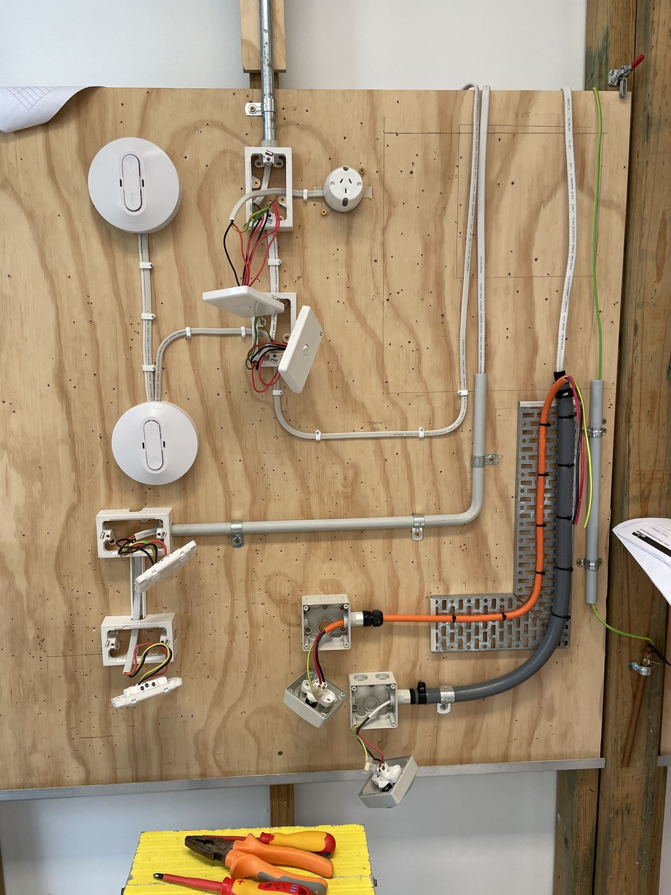
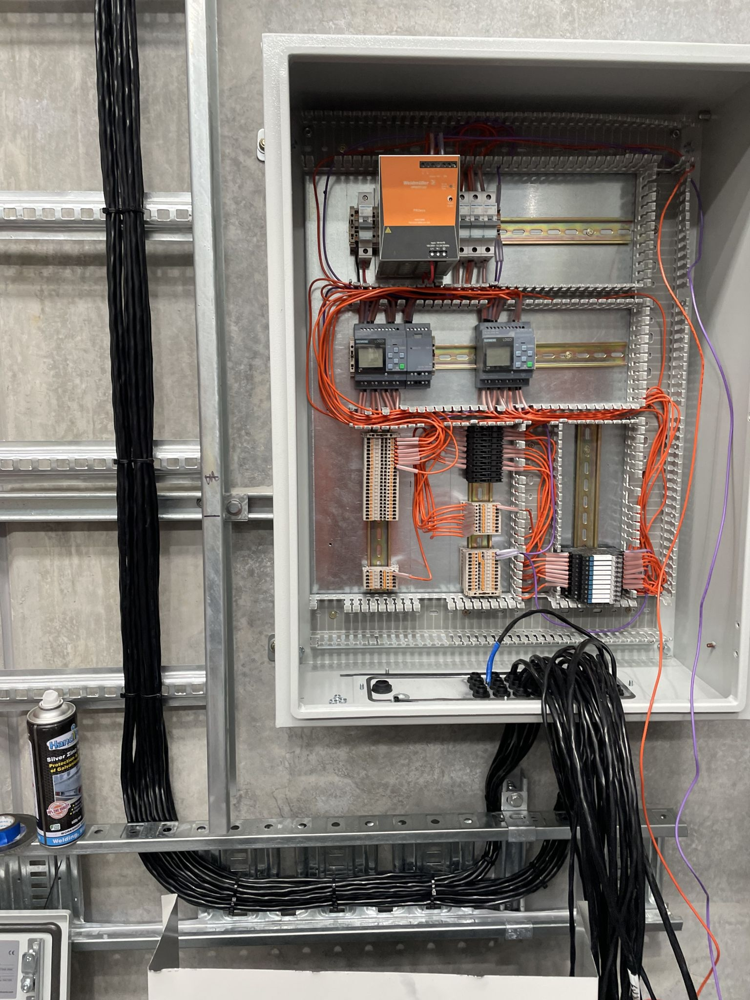

Hello!
My name's Geoff and I’m currently looking for a career change out of IT and getting a toehold in the electrical field, I'm on the hunt for an opportunity as a mature aged apprentice or a TA.
As part of the career change effort I’ve completed a Certificate II in Electrotechnology. I have a QLD Manual Driver’s License, a White Card, a car, live on the Sunshine Coast in Tewantin, work well in team environments and am quick to learn.
My background has mostly been software, some of which were in electrical companies. Recently I've finished a stint at a tier 1 electrical contractor, Fredon in Brisbane, working alongside electricians to develop energy reporting software for a solar power saving initiative. Adjacent to that was interfacing with SCADA systems for lighting control which used Dali and Modbus protocols. Despite that I've have had some work experience working directly with electrical, at TAFE and at a brewery, which I've found I really enjoy.
Also in the past I’ve worked as a communications tech at a company called Ezi Communications where I was working along side electricians & other tradespeople — running data cabling in drop ceilings along catenary wire, using snakes to fish out paths through conduit, rough-ins and fit-outs for new timber frame rooms at the office, working with hammer drills for various fixings, conduit and antenna mounts. It was good to be on the tools.
If you know of anyone who could put me to use as an apprentice or electrical TA please forward my details along and I'll shout you a carton or bottle of whatever you'd like.
Cheers,
Geoff
I worked under the guidence of an electrician in an EWP to run power cable and conduit for a cooling system pump at a brewery.
One of the final exams in the Cert II TAFE course, we had to install GPO's and switches along with bending metal and PVC conduit, cable tray, etc.
I worked under the guidence of an electrician to wire up and install a control panel for a glycol cooling system for a brewery, along with running shielded cable for temperature probes back to the control panel. Pictured is the control panel, not quite finished.
{kind=link}
{kind=link}
{kind=link}